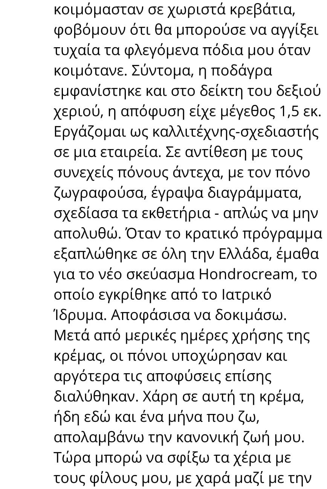

Γεια σας Φίλοι!
Το κρατικό πρόγραμμα "Υγιές Ελλάδα" άρχισε πριν από ενάμισι μήνα που κατευθύνθηκε για την καταπολέμηση των διαταραχών μυοσκελετικού συστήματος και αυτό το πρόγραμμα επέτρεψε στους χιλιάδες Έλληνες να αποκαταστήσουν τις αρθρώσεις τους. Στα πλαίσια αυτού του κοινωνικού προγράμματος, κάθε κάτοικος της Ελλάδας μπορεί να θεραπευτεί σχεδόν δωρεάν!
Περισσότερα για το κρατικό πρόγραμμα "Υγιές Ελλάδα" ζητήσαμε να μας πει ο δόκτορας ιατρικών επιστημών, ο καθηγητής, ο επικεφαλής γιατρός του τμήματος ορθοπαιδικής και τραυματολογίας του Ερευνητικού Κέντρου Ρευματολογίας της Ελλάδας ο Γεώργιος Πεσόπουλος.
Το κρατικό πρόγραμμα "Υγιές Ελλάδα" άρχισε πριν από ενάμισι μήνα που κατευθύνθηκε για την καταπολέμηση των διαταραχών μυοσκελετικού συστήματος και αυτό το πρόγραμμα επέτρεψε στους χιλιάδες Έλληνες να αποκαταστήσουν τις αρθρώσεις τους. Στα πλαίσια αυτού του κοινωνικού προγράμματος, κάθε κάτοικος της Ελλάδας μπορεί να θεραπευτεί σχεδόν δωρεάν!
Περισσότερα για το κρατικό πρόγραμμα "Υγιές Ελλάδα" ζητήσαμε να μας πει ο δόκτορας ιατρικών επιστημών, ο καθηγητής, ο επικεφαλής γιατρός του τμήματος ορθοπαιδικής και τραυματολογίας του Ερευνητικού Κέντρου Ρευματολογίας της Ελλάδας ο Γεώργιος Πεσόπουλος.
«Θυμηθείτε την απλή αλήθεια και μην ακούτε κανέναν: οι αρθρώσεις είναι πάντοτε θεραπευτές, ακόμα και στην πιο βαθιά γήρανση»
Ο Γεώργιος Πεσόπουλος δηλώνει ότι θα θεραπεύσει άτομο με 18χρονη οστεοχόνδρωση μέσα σε μερικές μήνες. Αυτός θα θεραπεύσει πλήρως τον οποιονδήποτε γερό με την πιο προχωρημένη αρθρίτιδα μέσα σε 78 ημέρες. Και οι πόνοι στις αρθρώσεις, με τη σωστή προσέγγιση θα φύγουν μόλις σε 4 ημέρες! Και, κατά τη διάρκεια 48 ετών ιατρικής δραστηριότητας του, αυτός επιβεβαιώνει κάθε δήλωση του με την πρακτική.
Αμέσως μετά την παρουσίαση στο τηλεοπτικό κανάλι ΕΡΤ1 (με θέμα «πώς να διατηρήσουν τις αρθρώσεις τους οι ηλικιωμένοι») συμφώνησε να δώσει μια συνέντευξη στο τηλεοπτικό κανάλι ο πολύ γνωστός γιατρός ρευματολόγος ο Γεώργιος Πεσόπουλος.
- Γεια σας, κύριε Πεσόπουλο. Πείτε μου, είναι αλήθεια ότι οι ασθένειες των αρθρώσεων και η οστεοχόνδρωση - είναι οι "υποχρεωτικοί" σύντροφοι της ώριμης ηλικίας;
- Γεια σας! Φυσικά - αυτό δεν είναι αλήθεια. Οι υποχρεωτικοί σύντροφοι της ώριμης ηλικίας - είναι μια υπερβολική εμπιστοσύνη στους γιατρούς που σας θεραπεύουνε εδώ και χρόνια, αλλά δεν μπορούν να θεραπεύσουν. Και στην πραγματικότητα, οι αρθρώσεις, οι χονδροί και ολόκληρος ο σκελετός είναι εκπληκτικά επιδεκτικοί στη θεραπεία σε οποιαδήποτε ηλικία. Αυτό είναι επιστημονικά αποδεδειγμένα.
Και αν γνωρίζετε το μυστικό και εφαρμόζετε λίγο την πειθαρχία - μπορείτε να θεραπεύεστε πολύ γρηγορά, ακόμα και στις σπιτικές συνθήκες, ότι και κάνουν οι χιλιάδες ασθενείς μου σε όλο το κόσμο.
- Και τι είναι αυτό το μυστικό;
- Για την αρχή πρέπει να καταλάβεις γιατί εμφανίζεται ο πόνος. Γενικά, οι εγκυκλοπαίδειες απαριθμούν έως και 147 πιθανές αιτίες ανάπτυξης της οστεοχόνδρωσης και της οστεοαρθρίτιδας, αλλά η συνέπεια είναι πάντα η μια – Ο ΧΟΝΔΡΙΝΟΣ ΙΣΤΟΣ των αρθρώσεων και των σπόνδυλων χάνει την ελαστικότητά τους, ως αποτέλεσμα να φθείρονται, από εκεί και εμφανίζεται ο πόνος. Φθείρονται λόγω της κακής παροχής του αίματος. Αποκαθιστώντας την παροχή αίματος στην άρθρωση, εμείς την θεραπεύουμε - εδώ είναι όλο το μυστικό!
- Ναι, αλλά θεωρείται, ότι είναι σχεδόν αδύνατο να αποκατασταθεί η κυκλοφορία του αίματος μετά από την ηλικία των 40 ετών
- Αυτό είναι όλα ανοησίες! Άπειρες φορές έχω ανεβασει τους ανθρώπους από την αναπηρική καρέκλα μετά τα ατυχήματα, και αυτό είναι πιο τρομερό πράγμα πάρα το πέρασμα της ηλικίας των 40 ετών.
- Αλλά, αν μιλάμε για τις ηλικιακές ασθένειες, τι είναι οι πρώτες ενδείξεις υποβάθμισης των αρθρώσεων μετά από την ηλικία των 40
- Τα πρώτα σημάδια μπορεί να θεωρηθούν τραγάνισμα, ερυθρότητα, πρήξιμο, μούδιασμα των δακτύλων, περιοδικός πόνος. Αυτό συμβαίνει συχνότερα λόγω της φυσικής υπερφόρτωσης της άρθρωσης. Το υπερβολικό βάρος, καθιστικός τρόπος ζωής, επαναλαμβανόμενες κινήσεις, ανύψωση βαρών, όλα αυτά οδηγούν σε υπερφόρτωση. Οι αρθρικοί χόνδροι καταστρέφονται, τα κόκαλα αρχίζουν να αγγίζουν ο ένας τον άλλο, έτσι αισθάνεστε δυσφορία και τρομερό πόνο. Ως αποτέλεσμα αυτού, εμφανίζεται πρώτα η δυσκαμψία της κίνησης, το πρήξιμο και στη συνέχεια το άκρο μπορεί να αποσύρεται εντελώς. Επίσης, η υψηλή περιεκτικότητα σε αλάτι για το σώμα έχει αρνητικές επιπτώσεις. Εάν έχετε ακατανόητους πόνους στα χέρια ή στα πόδια σας, πρέπει να περιοριστείτε επειγόντως στην κατανάλωση τροφίμων και υγρών που περιέχουν το νάτριο.
- Για ποια προϊόντα μιλάμε
- Η λίστα είναι αρκετά απλή:
Δεν συνιστάται να πίνετε:
- Αλλά οι περισσότεροι από τους ασθενείς μου - είναι απλοί άνθρωποι άνω των 40 ετών, στους οποίους οι ασθένειες εμφανίστηκαν «με την ηλικία». Αυτοί έρχονται με πολύ παρόμοια προβλήματα: η οστεοχόνδρωση, η οστεοαρθρίτιδα, η αρθρίτιδα, η ισχιαλγία, το τσιμπημένο νεύρο. Αυτές οι ασθένειες εξαντλούνε και εμποδίζουν τη ζωή.
Οι ασθενείς περπατάνε με δυσκολία, κλαίνε, έχουν πόνους. Και, φαίνεται, είναι απλοί άνθρωποι – δεν είναι οι αθλητές ή άτομα με ειδικές ανάγκες. Και διαμαρτύρονται - "γιατί σε μένα, γιατί εγώ;". Και εγώ τους απαντώ: ας μην τρέμομαστε, αλλά να αποκαταστήσουμε την κυκλοφορία του αίματος.
- Και πώς να αποκαταστήσουν την παροχή αίματος σε αυτή την ηλικία
- Μέχρι πρόσφατα, εγώ θεράπευα τους ανθρώπους με την βοήθεια της φυσικής αγωγής και με ένα σύνολο των 96 ασκήσεων στους προσομοιωτές. Αυτή είναι μια εξαιρετικά αποτελεσματική, αλλά πολύ δύσκολη, μεγάλης διάρκειας και ακριβής η μέθοδος. Οι άνθρωποι πονάνε, είναι πολύ δύσκολα, δεν έχουν αρκετό χρόνο και χρήματα να επισκεφθούν το γυμναστήριο. Πίστευα ότι πρέπει να υπάρχει ένας πιο σύγχρονος και εύκολος τρόπος – και τελικά το βρήκα.
- Πολύ ενδιαφέρον είναι! Θα πείτε γι' αυτό στους αναγνώστες μας
- Βέβαια. Ερευνητικό Κέντρο Ρευματολογίας της Ελλάδας ήταν το πρώτο στην Ελλάδα που έλαβε πιστοποιημένη πρόσβαση στο νεότερο σκεύασμα για οστεοχόνδρωση και πόνο στις αρθρώσεις. Σας ομολογώ, όταν άκουσα για αυτό για πρώτη φορά - απλά γέλασα, γιατί δεν πίστευα στην αποτελεσματικότητά του. Αλλά ήμουν έκπληκτος όταν ολοκληρώσαμε τη δοκιμή – από τα 5 000 δοκιμασμένων τα 4 726 άτομα θεραπεύθηκαν πλήρως από τις αρρώστιες τους, είναι πάνω από το 94% όλων των δοκιμασμένων. Το 5,6% αισθάνθηκαν τις σημαντικές βελτιώσεις και μόλις το 0,4% δεν παρουσίασαν καμία βελτίωση.
- Και τι σκεύασμα είναι αυτό;
- Μιλάω για μια ειδική κρέμα Artrovex. Αυτό το σκεύασμα μπορεί να βοηθήσει το συντομότερο δυνατόν, κυριολεκτικά μέσα σε 4 ημέρες να ξεχάσετε τον πόνο στην πλάτη και στους αρθρώσεις και ακόμη και πολύ περίπλοκες ασθένειες μπορεί να θεραπεύσει μέσα σε ένα μήνα.
Παράγεται μόνο στα βόρεια-δυτικά της Ελλάδας, στο Εθνικό πάρκο "Πινδ", και το Ιατρικό Ίδρυμα δαπάνησε 1,3 εκατομμύρια ευρώ για την ανάπτυξη συνταγών. Και Ερευνητικό Κέντρο Ρευματολογίας, παρεμπιπτόντως, κατέβαλλε σχεδόν 115 χιλιάδες ευρώ για το δικαίωμα να πουληθεί αυτή την κρέμα στο έδαφος της Ελλάδας.
- Κύριε Πεσόπουλο, και πώς λειτουργεί αυτή τη θαυματουργή κρέμα;
- Δεν υπάρχει κανένα θαύμα εδώ, είναι η σκέτη επιστήμη. Το κύριο συστατικό του σκευάσματος είναι ένα εκχύλισμα από πρόπολη. Δηλαδή, το κύριο καθήκον του - είναι η δημιουργία νέου οστικού ιστού. Μπορείτε να φανταστείτε τη βιολογική δύναμη ενός τέτοιου μηχανισμού; Δεν υπάρχει στη φύση ακόμα τίποτα πιο αποτελεσματικό για την ενεργοποίηση της κυκλοφορίας του αίματος στα οστά και στις αρθρώσεις. Επιπλέον η ρητίνη του κέδρου, το κερί μέλισσας, το εκχύλισμα κηροσκόρου, τα οποία συμβάλλουν στην απτή τους συμβολή στην αποτελεσματικότητα του σκευάσματος. Ευτυχώς το εθνικό πάρκο "Πινδ" έχει απεριόριστο απόθεμα αυτών των στοιχείων. Νομίζω ότι δεν αξίζει να μιλάμε για τα οφέλη των φυσικών βοτάνων του βορειά- δυτικού της Ελλάδας.
Ακόμη και μία εφαρμογή είναι αρκετή για να ενεργοποιηθούν περισσότερα από 930 000 κύτταρα, τα οποία συμμετέχουν άμεσα στη διαδικασία ροής αίματος. Και έτσι γίνεται κάθε φορά. Αυτή είναι η βασική αρχή της θεραπείας.
- Ακούγεται εντυπωσιακό. Απλά μας εξηγήστε τι σημαίνει αυτό για τους απλούς ανθρώπους με ασθένειες;
- Αυτό σημαίνει ότι η μεσαιωνική ιατρική είναι ένα πράγμα του παρελθόντος και μπορεί ο καθένας να θεραπεύσει τις αρθρώσεις του στις σπιτικές συνθήκες μέσα σε ένα ή δύο μήνες. Η κρέμα Artrovex δεν παγώνει και δεν αναισθητοποιεί, αυτή "επανεκκινεί" το σώμα σε κυτταρικό επίπεδο. Εξαλείφει την αιτία του ίδιου του πόνου, η Artrovex επιστρέφει στους αρθρώσεις και στην σπονδυλική στήλη την υγείες κατάσταση. Αν πούμε με απλά λόγια, ο ασθενής δεν απαλλαχτεί από τα συμπτώματα, αλλά απομακρύνει τη ρίζα της νόσου.
Την πρώτη ημέρα, η κρέμα Artrovex ξεκινάει το σύστημα αναγέννησης του σώματος και σταματάει το σύνδρομο του πόνου. Σε δύο ή τρεις εβδομάδες η θεραπεία θα ολοκληρωθεί.
- Αποδεικνύεται ότι Artrovex θεραπεύει κάθε ασθένεια;
- Σωστά. Αποκαθιστώντας την παροχή του αίματος, θεραπεύει οποιαδήποτε ασθένεια που σχετίζεται με αρθρώσεις και σπονδυλική στήλη – η οστεοαρθρίτιδα, η αρθρίτιδα, η ισχιαλγία, τους ρευματισμούς, η σπαστική κολίτιδα, η οστεοχόνδρωση, η μετατόπιση σπονδυλικών δίσκων, τα διαστρέμματα, οι κακώσεις, οι μώλωπες, τα κατάγματα, ναι έστω και τους κάλους - η κρέμα είναι εκπληκτικά αποτελεσματική.
Επίσης, η Artrovex εξαλείφει τον πόνο στα αρχικά στάδια της θεραπείας με την πρώτη εφαρμογή, και στη συνέχεια εξαλείφει πλήρως την ασθένεια. Θέλω να με καταλάβετε σωστά, μου αρέσουν οι μέθοδοι ευεξίας, που περιλαμβάνουν μέσα την φυσική αγωγή και ο αθλητισμός, αλλά είναι πολύ δύσκολα και για την πλειοψηφία των ασθενών αυτή τη κρέμα - είναι ο απλούστερος, πιο αποτελεσματικός και προσιτός τρόπος θεραπείας.
- Είπατε, ότι στα πλαίσια του κρατικού προγράμματος, η κρέμα Artrovex μπορεί να αγοραστεί σε μια προνομιακή τιμή; Αυτό μπορεί να κάνει οποιοσδήποτε;
- Ναι, απολύτως. Η αλήθεια είναι ότι υπάρχει μια μικρή εξαίρεση. Τα φαρμακευτικά δίκτυα αρνήθηκαν να μας βοηθήσουν στην υλοποίηση αυτού του προϊόντος, παρακινώντας την απροθυμία τους από το γεγονός, ότι είναι οικονομικά ασύμφορο για αυτούς. Ό,τι μπορεί να πει κανείς - τα φαρμακεία - είναι εμπορικοί οργανισμοί που ενδιαφέρονται περισσότερο να βγάλουν χρήματα, παρά να βελτιώσουν την υγεία του πληθυσμού.
Από την άποψη αυτή, Ερευνητικό Κέντρο Ρευματολογίας της Ελλάδας πηρέ την απόφαση να υλοποιήσει την κρέμα μέσω της ειδικής ιστοσελίδας. Ωστόσο, υπάρχει σε αυτό και ένα πλεονέκτημα – αυτό επίτρεψε να γίνει διανομή του Artrovex σε όλες τις περιοχές της Ελλάδας. Αυτή τη στιγμή ο καθένας μπορεί πλέον να αγοράσει την κρέμα σε μια προνομιακή τιμή με έκπτωση 50%.
- Πόσο καιρό θα συνεχιστεί αυτό το πρόγραμμα, στα πλαίσια του οποίου η Artrovex μπορούμε να αγοράσουμε με έκπτωση 50%; Μετά την ολοκλήρωση του προγράμματος να αγοραστεί η Artrovex με έκπτωση θα είναι αδύνατο;
- Πολύ σωστά. Το κρατικό πρόγραμμα ολοκληρώνει τη δράση του στις 18.01.2019. Ακριβώς μέχρι αυτή τη ημερομηνία (συμπεριλαμβανομένου) πρέπει να αφήσετε μια αίτηση στην ιστοσελίδα του κατασκευαστή. Γι' αυτό, οι εκείνοι που θέλουν να αγοράσουν τη κρέμα Artrovex σε μια προνομιακή τιμή πρέπει να βιαστείτε.
Προς το παρόν, η κρέμα Artrovex έχουν αποκτήσει ήδη αρκετές δεκάδες χιλιάδες άτομα. Κάθε μέρα λαμβάνουμε πολλά θετικά σχόλια γι' αυτήν, καθώς και λόγια ευχαριστιών. Αυτό το σκεύασμα βοηθάει σε όλους.
- Κύριε Πεσόπουλο, σας ευχαριστώ για τη συνέντευξη! Ίσως θέλετε να πείτε κάτι στους αναγνώστες μας πριν να μας πείτε αντίο;
- Ναι, φυσικά. Θέλω να επιστήσω την προσοχή των αναγνωστών στο γεγονός, ότι οι ασθένειες των αρθρώσεων δεν προκαλούν μόνο δυσφορία, αλλά συντομεύουν τη ζωή για 10-16 χρόνια. Για αυτό το λόγο και ακόμη οι αδύναμοι περιοδικοί πόνοι - είναι μια ευκαιρία να δοθεί προσοχή σε αυτό το πρόβλημα. Δεν θα σας πει κάνεις, ότι είναι καιρός να υποβληθείτε σε θεραπεία.
Και εγώ θέλω να υπενθυμίσω, ότι ο καθένας, οποίος παραγγείλει Artrovex μέχρι και τις 18.01.2019,θα λάβει την έκπτωση 50%. Μπορείτε να παραγγείλετε Artrovex στην ιστοσελίδα του κατασκευαστή.
Ο Γεώργιος Πεσόπουλος δηλώνει ότι θα θεραπεύσει άτομο με 18χρονη οστεοχόνδρωση μέσα σε μερικές μήνες. Αυτός θα θεραπεύσει πλήρως τον οποιονδήποτε γερό με την πιο προχωρημένη αρθρίτιδα μέσα σε 78 ημέρες. Και οι πόνοι στις αρθρώσεις, με τη σωστή προσέγγιση θα φύγουν μόλις σε 4 ημέρες! Και, κατά τη διάρκεια 48 ετών ιατρικής δραστηριότητας του, αυτός επιβεβαιώνει κάθε δήλωση του με την πρακτική.
Αμέσως μετά την παρουσίαση στο τηλεοπτικό κανάλι ΕΡΤ1 (με θέμα «πώς να διατηρήσουν τις αρθρώσεις τους οι ηλικιωμένοι») συμφώνησε να δώσει μια συνέντευξη στο τηλεοπτικό κανάλι ο πολύ γνωστός γιατρός ρευματολόγος ο Γεώργιος Πεσόπουλος.
- Γεια σας, κύριε Πεσόπουλο. Πείτε μου, είναι αλήθεια ότι οι ασθένειες των αρθρώσεων και η οστεοχόνδρωση - είναι οι "υποχρεωτικοί" σύντροφοι της ώριμης ηλικίας;
- Γεια σας! Φυσικά - αυτό δεν είναι αλήθεια. Οι υποχρεωτικοί σύντροφοι της ώριμης ηλικίας - είναι μια υπερβολική εμπιστοσύνη στους γιατρούς που σας θεραπεύουνε εδώ και χρόνια, αλλά δεν μπορούν να θεραπεύσουν. Και στην πραγματικότητα, οι αρθρώσεις, οι χονδροί και ολόκληρος ο σκελετός είναι εκπληκτικά επιδεκτικοί στη θεραπεία σε οποιαδήποτε ηλικία. Αυτό είναι επιστημονικά αποδεδειγμένα.
Και αν γνωρίζετε το μυστικό και εφαρμόζετε λίγο την πειθαρχία - μπορείτε να θεραπεύεστε πολύ γρηγορά, ακόμα και στις σπιτικές συνθήκες, ότι και κάνουν οι χιλιάδες ασθενείς μου σε όλο το κόσμο.
- Και τι είναι αυτό το μυστικό;
- Για την αρχή πρέπει να καταλάβεις γιατί εμφανίζεται ο πόνος. Γενικά, οι εγκυκλοπαίδειες απαριθμούν έως και 147 πιθανές αιτίες ανάπτυξης της οστεοχόνδρωσης και της οστεοαρθρίτιδας, αλλά η συνέπεια είναι πάντα η μια – Ο ΧΟΝΔΡΙΝΟΣ ΙΣΤΟΣ των αρθρώσεων και των σπόνδυλων χάνει την ελαστικότητά τους, ως αποτέλεσμα να φθείρονται, από εκεί και εμφανίζεται ο πόνος. Φθείρονται λόγω της κακής παροχής του αίματος. Αποκαθιστώντας την παροχή αίματος στην άρθρωση, εμείς την θεραπεύουμε - εδώ είναι όλο το μυστικό!
- Ναι, αλλά θεωρείται, ότι είναι σχεδόν αδύνατο να αποκατασταθεί η κυκλοφορία του αίματος μετά από την ηλικία των 40 ετών
- Αυτό είναι όλα ανοησίες! Άπειρες φορές έχω ανεβασει τους ανθρώπους από την αναπηρική καρέκλα μετά τα ατυχήματα, και αυτό είναι πιο τρομερό πράγμα πάρα το πέρασμα της ηλικίας των 40 ετών.
- Αλλά, αν μιλάμε για τις ηλικιακές ασθένειες, τι είναι οι πρώτες ενδείξεις υποβάθμισης των αρθρώσεων μετά από την ηλικία των 40
- Τα πρώτα σημάδια μπορεί να θεωρηθούν τραγάνισμα, ερυθρότητα, πρήξιμο, μούδιασμα των δακτύλων, περιοδικός πόνος. Αυτό συμβαίνει συχνότερα λόγω της φυσικής υπερφόρτωσης της άρθρωσης. Το υπερβολικό βάρος, καθιστικός τρόπος ζωής, επαναλαμβανόμενες κινήσεις, ανύψωση βαρών, όλα αυτά οδηγούν σε υπερφόρτωση. Οι αρθρικοί χόνδροι καταστρέφονται, τα κόκαλα αρχίζουν να αγγίζουν ο ένας τον άλλο, έτσι αισθάνεστε δυσφορία και τρομερό πόνο. Ως αποτέλεσμα αυτού, εμφανίζεται πρώτα η δυσκαμψία της κίνησης, το πρήξιμο και στη συνέχεια το άκρο μπορεί να αποσύρεται εντελώς. Επίσης, η υψηλή περιεκτικότητα σε αλάτι για το σώμα έχει αρνητικές επιπτώσεις. Εάν έχετε ακατανόητους πόνους στα χέρια ή στα πόδια σας, πρέπει να περιοριστείτε επειγόντως στην κατανάλωση τροφίμων και υγρών που περιέχουν το νάτριο.
- Για ποια προϊόντα μιλάμε
- Η λίστα είναι αρκετά απλή:
Δεν συνιστάται να πίνετε:
- Μεταλλικό νερό
- Χυμός τομάτας
- Άλμη
- Αλκοολούχα ποτά
- Αριάνι, Κεφίρ (γαλακτοκομικά προϊόντα με περιεκτικότητα σε νάτριο)
- Αλατισμένο βούτυρο, μαργαρίνη
- Όλα τα είδη σκληρών και μαλακών τυριών
- Καπνιστό κρέας, ζαμπόν, μπέικον, βόειο κρέας, κρέας κομμένο σε φέτες, ζελέ, κονσερβοποιημένο κρέας
- Λουκάνικα, σαλάμια ( βιομηχανικά παραγόμενα σαλάμια και άλλα προϊόντα με βάση το κρέας που προστίθενται διάφορα συντηρητικά και σταθεροποιητές που περιέχουν πολύ νάτριο)
- Φαγητά από κρέας και ψάρι με γρήγορο μαγείρεμα
- Καπνιστά και κονσερβοποιημένα ψάρια και θαλασσινά
- Καβούρια, αστακοί, γαρίδες, καρκίνοι (μαγειρεμένα με αλάτι)
- Κονσερβοποιημένα λαχανικά
- Τσιπς, ξινό λάχανο
- Τηγανητά και αλατισμένα φιστίκια, φυστικοβούτυρο
- Σάλτσες, σάλτσες για ζυμαρικά, κέτσαπ, σάλτσες για σαλάτα, μαρινάδες
- Όλα τα είδη στιγμιαίων σουπών
- Κύβοι ζωμών
- Αλλά οι περισσότεροι από τους ασθενείς μου - είναι απλοί άνθρωποι άνω των 40 ετών, στους οποίους οι ασθένειες εμφανίστηκαν «με την ηλικία». Αυτοί έρχονται με πολύ παρόμοια προβλήματα: η οστεοχόνδρωση, η οστεοαρθρίτιδα, η αρθρίτιδα, η ισχιαλγία, το τσιμπημένο νεύρο. Αυτές οι ασθένειες εξαντλούνε και εμποδίζουν τη ζωή.
Οι ασθενείς περπατάνε με δυσκολία, κλαίνε, έχουν πόνους. Και, φαίνεται, είναι απλοί άνθρωποι – δεν είναι οι αθλητές ή άτομα με ειδικές ανάγκες. Και διαμαρτύρονται - "γιατί σε μένα, γιατί εγώ;". Και εγώ τους απαντώ: ας μην τρέμομαστε, αλλά να αποκαταστήσουμε την κυκλοφορία του αίματος.
- Και πώς να αποκαταστήσουν την παροχή αίματος σε αυτή την ηλικία
- Μέχρι πρόσφατα, εγώ θεράπευα τους ανθρώπους με την βοήθεια της φυσικής αγωγής και με ένα σύνολο των 96 ασκήσεων στους προσομοιωτές. Αυτή είναι μια εξαιρετικά αποτελεσματική, αλλά πολύ δύσκολη, μεγάλης διάρκειας και ακριβής η μέθοδος. Οι άνθρωποι πονάνε, είναι πολύ δύσκολα, δεν έχουν αρκετό χρόνο και χρήματα να επισκεφθούν το γυμναστήριο. Πίστευα ότι πρέπει να υπάρχει ένας πιο σύγχρονος και εύκολος τρόπος – και τελικά το βρήκα.
- Πολύ ενδιαφέρον είναι! Θα πείτε γι' αυτό στους αναγνώστες μας
- Βέβαια. Ερευνητικό Κέντρο Ρευματολογίας της Ελλάδας ήταν το πρώτο στην Ελλάδα που έλαβε πιστοποιημένη πρόσβαση στο νεότερο σκεύασμα για οστεοχόνδρωση και πόνο στις αρθρώσεις. Σας ομολογώ, όταν άκουσα για αυτό για πρώτη φορά - απλά γέλασα, γιατί δεν πίστευα στην αποτελεσματικότητά του. Αλλά ήμουν έκπληκτος όταν ολοκληρώσαμε τη δοκιμή – από τα 5 000 δοκιμασμένων τα 4 726 άτομα θεραπεύθηκαν πλήρως από τις αρρώστιες τους, είναι πάνω από το 94% όλων των δοκιμασμένων. Το 5,6% αισθάνθηκαν τις σημαντικές βελτιώσεις και μόλις το 0,4% δεν παρουσίασαν καμία βελτίωση.
- Και τι σκεύασμα είναι αυτό;
- Μιλάω για μια ειδική κρέμα Artrovex. Αυτό το σκεύασμα μπορεί να βοηθήσει το συντομότερο δυνατόν, κυριολεκτικά μέσα σε 4 ημέρες να ξεχάσετε τον πόνο στην πλάτη και στους αρθρώσεις και ακόμη και πολύ περίπλοκες ασθένειες μπορεί να θεραπεύσει μέσα σε ένα μήνα.
Παράγεται μόνο στα βόρεια-δυτικά της Ελλάδας, στο Εθνικό πάρκο "Πινδ", και το Ιατρικό Ίδρυμα δαπάνησε 1,3 εκατομμύρια ευρώ για την ανάπτυξη συνταγών. Και Ερευνητικό Κέντρο Ρευματολογίας, παρεμπιπτόντως, κατέβαλλε σχεδόν 115 χιλιάδες ευρώ για το δικαίωμα να πουληθεί αυτή την κρέμα στο έδαφος της Ελλάδας.
- Κύριε Πεσόπουλο, και πώς λειτουργεί αυτή τη θαυματουργή κρέμα;
- Δεν υπάρχει κανένα θαύμα εδώ, είναι η σκέτη επιστήμη. Το κύριο συστατικό του σκευάσματος είναι ένα εκχύλισμα από πρόπολη. Δηλαδή, το κύριο καθήκον του - είναι η δημιουργία νέου οστικού ιστού. Μπορείτε να φανταστείτε τη βιολογική δύναμη ενός τέτοιου μηχανισμού; Δεν υπάρχει στη φύση ακόμα τίποτα πιο αποτελεσματικό για την ενεργοποίηση της κυκλοφορίας του αίματος στα οστά και στις αρθρώσεις. Επιπλέον η ρητίνη του κέδρου, το κερί μέλισσας, το εκχύλισμα κηροσκόρου, τα οποία συμβάλλουν στην απτή τους συμβολή στην αποτελεσματικότητα του σκευάσματος. Ευτυχώς το εθνικό πάρκο "Πινδ" έχει απεριόριστο απόθεμα αυτών των στοιχείων. Νομίζω ότι δεν αξίζει να μιλάμε για τα οφέλη των φυσικών βοτάνων του βορειά- δυτικού της Ελλάδας.
Ακόμη και μία εφαρμογή είναι αρκετή για να ενεργοποιηθούν περισσότερα από 930 000 κύτταρα, τα οποία συμμετέχουν άμεσα στη διαδικασία ροής αίματος. Και έτσι γίνεται κάθε φορά. Αυτή είναι η βασική αρχή της θεραπείας.
- Ακούγεται εντυπωσιακό. Απλά μας εξηγήστε τι σημαίνει αυτό για τους απλούς ανθρώπους με ασθένειες;
- Αυτό σημαίνει ότι η μεσαιωνική ιατρική είναι ένα πράγμα του παρελθόντος και μπορεί ο καθένας να θεραπεύσει τις αρθρώσεις του στις σπιτικές συνθήκες μέσα σε ένα ή δύο μήνες. Η κρέμα Artrovex δεν παγώνει και δεν αναισθητοποιεί, αυτή "επανεκκινεί" το σώμα σε κυτταρικό επίπεδο. Εξαλείφει την αιτία του ίδιου του πόνου, η Artrovex επιστρέφει στους αρθρώσεις και στην σπονδυλική στήλη την υγείες κατάσταση. Αν πούμε με απλά λόγια, ο ασθενής δεν απαλλαχτεί από τα συμπτώματα, αλλά απομακρύνει τη ρίζα της νόσου.
Την πρώτη ημέρα, η κρέμα Artrovex ξεκινάει το σύστημα αναγέννησης του σώματος και σταματάει το σύνδρομο του πόνου. Σε δύο ή τρεις εβδομάδες η θεραπεία θα ολοκληρωθεί.
- Αποδεικνύεται ότι Artrovex θεραπεύει κάθε ασθένεια;
- Σωστά. Αποκαθιστώντας την παροχή του αίματος, θεραπεύει οποιαδήποτε ασθένεια που σχετίζεται με αρθρώσεις και σπονδυλική στήλη – η οστεοαρθρίτιδα, η αρθρίτιδα, η ισχιαλγία, τους ρευματισμούς, η σπαστική κολίτιδα, η οστεοχόνδρωση, η μετατόπιση σπονδυλικών δίσκων, τα διαστρέμματα, οι κακώσεις, οι μώλωπες, τα κατάγματα, ναι έστω και τους κάλους - η κρέμα είναι εκπληκτικά αποτελεσματική.
Επίσης, η Artrovex εξαλείφει τον πόνο στα αρχικά στάδια της θεραπείας με την πρώτη εφαρμογή, και στη συνέχεια εξαλείφει πλήρως την ασθένεια. Θέλω να με καταλάβετε σωστά, μου αρέσουν οι μέθοδοι ευεξίας, που περιλαμβάνουν μέσα την φυσική αγωγή και ο αθλητισμός, αλλά είναι πολύ δύσκολα και για την πλειοψηφία των ασθενών αυτή τη κρέμα - είναι ο απλούστερος, πιο αποτελεσματικός και προσιτός τρόπος θεραπείας.
- Είπατε, ότι στα πλαίσια του κρατικού προγράμματος, η κρέμα Artrovex μπορεί να αγοραστεί σε μια προνομιακή τιμή; Αυτό μπορεί να κάνει οποιοσδήποτε;
- Ναι, απολύτως. Η αλήθεια είναι ότι υπάρχει μια μικρή εξαίρεση. Τα φαρμακευτικά δίκτυα αρνήθηκαν να μας βοηθήσουν στην υλοποίηση αυτού του προϊόντος, παρακινώντας την απροθυμία τους από το γεγονός, ότι είναι οικονομικά ασύμφορο για αυτούς. Ό,τι μπορεί να πει κανείς - τα φαρμακεία - είναι εμπορικοί οργανισμοί που ενδιαφέρονται περισσότερο να βγάλουν χρήματα, παρά να βελτιώσουν την υγεία του πληθυσμού.
Από την άποψη αυτή, Ερευνητικό Κέντρο Ρευματολογίας της Ελλάδας πηρέ την απόφαση να υλοποιήσει την κρέμα μέσω της ειδικής ιστοσελίδας. Ωστόσο, υπάρχει σε αυτό και ένα πλεονέκτημα – αυτό επίτρεψε να γίνει διανομή του Artrovex σε όλες τις περιοχές της Ελλάδας. Αυτή τη στιγμή ο καθένας μπορεί πλέον να αγοράσει την κρέμα σε μια προνομιακή τιμή με έκπτωση 50%.
- Πόσο καιρό θα συνεχιστεί αυτό το πρόγραμμα, στα πλαίσια του οποίου η Artrovex μπορούμε να αγοράσουμε με έκπτωση 50%; Μετά την ολοκλήρωση του προγράμματος να αγοραστεί η Artrovex με έκπτωση θα είναι αδύνατο;
- Πολύ σωστά. Το κρατικό πρόγραμμα ολοκληρώνει τη δράση του στις 18.01.2019. Ακριβώς μέχρι αυτή τη ημερομηνία (συμπεριλαμβανομένου) πρέπει να αφήσετε μια αίτηση στην ιστοσελίδα του κατασκευαστή. Γι' αυτό, οι εκείνοι που θέλουν να αγοράσουν τη κρέμα Artrovex σε μια προνομιακή τιμή πρέπει να βιαστείτε.
Προς το παρόν, η κρέμα Artrovex έχουν αποκτήσει ήδη αρκετές δεκάδες χιλιάδες άτομα. Κάθε μέρα λαμβάνουμε πολλά θετικά σχόλια γι' αυτήν, καθώς και λόγια ευχαριστιών. Αυτό το σκεύασμα βοηθάει σε όλους.
- Κύριε Πεσόπουλο, σας ευχαριστώ για τη συνέντευξη! Ίσως θέλετε να πείτε κάτι στους αναγνώστες μας πριν να μας πείτε αντίο;
- Ναι, φυσικά. Θέλω να επιστήσω την προσοχή των αναγνωστών στο γεγονός, ότι οι ασθένειες των αρθρώσεων δεν προκαλούν μόνο δυσφορία, αλλά συντομεύουν τη ζωή για 10-16 χρόνια. Για αυτό το λόγο και ακόμη οι αδύναμοι περιοδικοί πόνοι - είναι μια ευκαιρία να δοθεί προσοχή σε αυτό το πρόβλημα. Δεν θα σας πει κάνεις, ότι είναι καιρός να υποβληθείτε σε θεραπεία.
Και εγώ θέλω να υπενθυμίσω, ότι ο καθένας, οποίος παραγγείλει Artrovex μέχρι και τις 18.01.2019,θα λάβει την έκπτωση 50%. Μπορείτε να παραγγείλετε Artrovex στην ιστοσελίδα του κατασκευαστή.

